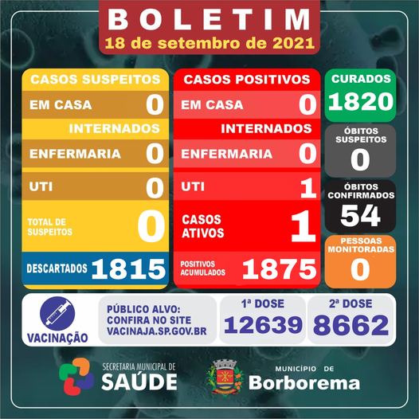
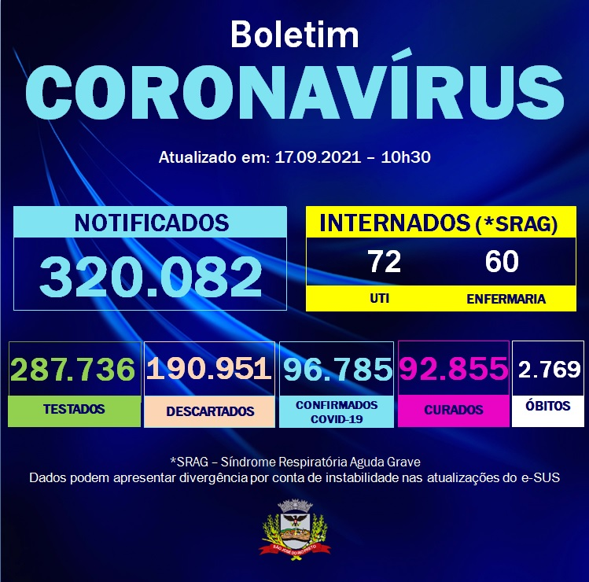

Covid-19
O que é?
A doença por coronavírus (COVID-19) é uma doença infecciosa causada pelo vírus SARS-CoV-2.
A maioria das pessoas infectadas com o vírus terá uma doença respiratória leve a moderada e se recuperará sem a necessidade de tratamento especial. No entanto, alguns ficarão gravemente doentes e necessitarão de atenção médica. Idosos e pessoas com condições médicas subjacentes, como doenças cardiovasculares, diabetes, doenças respiratórias crônicas ou câncer, têm maior probabilidade de desenvolver doenças graves. Qualquer pessoa pode adoecer com COVID-19 e adoecer gravemente ou morrer em qualquer idade.
A melhor maneira de prevenir e retardar a transmissão é estar bem informado sobre a doença e como o vírus se espalha. Proteja-se e proteja outras pessoas de infecções mantendo-se a pelo menos 1 metro de distância das outras pessoas, usando uma máscara adequada e lavando as mãos ou esfregando-as frequentemente com álcool. Vacine-se quando for sua vez e siga as orientações locais
O vírus pode se espalhar pela boca ou nariz de uma pessoa infectada em pequenas partículas líquidas quando tossir, espirrar, falar, cantar ou respirar. Essas partículas variam de gotículas respiratórias maiores a aerossóis menores. É importante praticar a etiqueta respiratória, por exemplo, tossindo com o cotovelo flexionado, e ficar em casa e isolar-se até se recuperar, caso não se sinta bem.
Quais os sintomas?
Sintomas mais comuns
- Febre
- Tosse seca
- Cançaso
- perda de paladar ou do olfato
Sintomas menos comuns
- Dores e desconfortos
- Dor de garganta
- Diarreia
- Conjuntivite
- Dor de cabeça
- Erupção na pele ou descoloração dos dedos das mãos ou dos pés
- Olhos vermelhos ou irritados
Sintomas graves
- Dificuldade em respirar ou falta de ar
- Perda de fala ou mobilidade, ou confusão
- Dor no peito
Como prevenir?
- Seja vacinado quando uma vacina estiver disponível para você
- Fique pelo menos 1 metro afastado dos outros, mesmo que eles não pareçam estar doentes
- Use uma máscara devidamente ajustada quando o distanciamento físico não for possível ou em ambientes mal ventilados
- Escolha espaços abertos e bem ventilados em vez de fechados
- Abra uma janela se estiver dentro de casa
- Lave as mãos regularmente com água e sabão ou lave-as com um produto à base de álcool
- Cubra a boca e o nariz ao tossir ou espirrar. Se você não se sentir bem, fique em casa e isole-se até se recuperar
Para prevenir a infecção e retardar a transmissão de COVID-19, faça o seguinte:
Como tratar?
Procure atendimento médico imediato se tiver sintomas graves. Sempre ligue antes de ir ao médico ou posto de saúde, clínicas ou hospitais.
Pessoas saudáveis que apresentarem os sintomas leves devem acompanhar seus sintomas em casa.
Em média, os sintomas aparecem após 5 ou 6 dias depois de ser infectado com o vírus. Porém, isso pode levar até 14 dias.
Quais as estatísticas de casos?
Borborema
Novo Horizonte
Rio Preto
Onde procurar atendimento?
Borborema-SP
Centro de Atendimento para Enfrentamento à COVID-19
Tel: (016)32661211Av. Saudade, 54
Vila Mariana
Segunda a sexta-feira, das 7h às 17h
Pronto Socorro Municipal Borborema
Tel: (016)3266-1011 Tel: (016)3266-1188Rua Pedro José dos Passos, 400
Jd. Primavera
Atendimento 24 horas
Centro de Saúde III Borborema
Tel: (016)3266-1211Rua Benjamin Constant, 195
Centro
Segunda a sexta-feira, das 7h às 17h
ESF Núcleo I Vila Hermes
Tel: (016)3266-2916Rua Otavio Luiz Torres, 4
Vila Hermes
Segunda a sexta-feira, das 7h às 17h
ESF Núcleo II Vila Cristina
Tel: (016)3266-2297Rua Joaquim Paes de Barros, 100
Vila Maria Cristina
Segunda a sexta-feira, das 7h às 17h
ESF Núcleo III Alvorada
Tel: (016)3276-1020Rua Gasparina Rosa da Silva, 475
Jd. Alto do Ouro Verde
Segunda a sexta-feira, das 7h às 17h
Posto de Saúde Vila Orestina
Tel: (016)3266-3618Rua Bandeirantes, S/N
Vila Orestina
Segunda a sexta-feira, das 7h às 13h
Novo Horizonte
Pronto Socorro Novo Horizonte
Tel: (017)3542-9292R. Vinte e Oito de Outubro, 1202
Centro
Atendimento 24 horas
UBS Centro
Tel: (017)3543-9000R. Sete de Setembro, 1175
Centro
Segunda a sexta feira das 07:00 as 17:00
Posto de Saúde - Santa Clara
Tel: (017)R. Urupês, 612
Santa Clara
Segunda a sexta feira das 07:00 as 17:00
UBS São Benedito
Tel: (017)Av. Antônio Pedro Tomitão, S/N
São Benedito
Segunda a sexta feira das 07:00 as 17:00
UBS Centro
Tel: (017)3543-9000R. Sete de Setembro, 1175
Centro
Segunda a sexta feira das 07:00 as 17:00
São José do Rio Preto
UBS Central
Tel: (017)3224-8950Av. Philadelpho Manoel Gouveia Neto, 3165 - Terreo
Vila Maceno
Segunda a sexta feira das 07:00 as 17:00
UBS Jaguaré
Tel: (017)3202-3060Av. Danilo Galeazzi, 1881
Parque Jaguaré
Segunda a sexta feira das 07:00 as 17:00
UBSF São Deocleciano
Tel: (017)32253689Avenida, R. João José Lucânia Fernandes, S/N
Conj. Hab. São Deocleciano
Segunda a sexta feira das 07:00 as 17:00
UBSF Jardim Americano
Tel: (017)3224-9389Av. Antônio Tavares Pereira Lima, 755
Jardim America
Segunda a sexta feira das 07:00 as 17:00
UBSF Anchieta
Tel: (017)3224-4322Av. Maria da Silva Doria, 555
Mariza Cristina II
Segunda a sexta feira das 07:00 as 17:00
UBSF São José do Rio Preto
Tel: (017) 3215-3601Av. Marginal 02
Jardim Felicidade
Segunda a sexta feira das 07:00 as 17:00
UBS Parque Industrial
Tel: (017)3233-2489R. Expedicionários, 1541
Parque Industrial
Segunda a sexta feira das 07:00 as 17:00
UBS Vila Elvira
Tel: (017)3224-3695Av. Maj. Leo Lerro, 558
Vila Elvira
Segunda a sexta feira das 07:00 as 17:00
UBSF Jardim Simoes Renascer
Tel: (017)3219-0107R. Alberto Bechara Hage, 405
Jardim Simoes
Segunda a sexta feira das 07:00 as 17:00
UBS Eldorado "Dr. Oscar Barros Serra Dória"
Tel: (017)3236-3463Av. Nova Granada, 3320
Eldorado
Segunda a sexta feira das 07:00 as 20:00
UBSF Vila Mayor
Tel: (017)3236-3784Av. Domingos Falavina, 801
Vila Mayor
Segunda a sexta feira das 07:00 as 17:00
UBS São Francisco
Tel: (017)3216-7511R. José Secco, 750
São Francisco
Segunda a sexta feira das 07:00 as 17:00
UBSF Lealdade e Amizade
Tel: (017)3229-7641Rua Projetada, 15
Parque Residencial da Lealdade
segunda-feira 07:00–22:00
terça-feira 07:00–17:00
quarta-feira 07:00–15:00
quinta-feira 07:00–15:00
sexta-feira 07:00–15:00
UBS Santo Antonio
Tel: (017)3206-2088R. Ida Tagliavini Polachini, 580
Jardim Santo Antônio
Segunda a sexta feira das 07:00 as 20:00
UBS Vetorazzo
Tel: (017)3219-4171Av. Fortunato Ernesto Vetorasso, 711
Jardim Res. Vetorasso
Segunda a sexta feira das 07:00 as 19:00
UBS Solo Sagrado "Dr. Vergílio Dalla Pria Neto"
Tel: (017)3219-9320R. Beatriz da Conceição, 406
Solo Sagrado
Segunda a sexta feira das 07:00 as 22:00
UBSF Vila Toninho
Tel: (017)3218-1004R. Odilon Amadeu, 710
Vila Toninho
Segunda a sexta feira das 07:00 as 17:00
UBS Caic
Tel: (017)3238-1095Av. de Maio, 2550
Vila São Judas
Segunda a sexta feira das 07:00 as 17:00
UBSF Cidade Jardim
Tel: (017)3216-6199Avenida, R. Doutor Loft João Bassitt, 1900
Cidade Jardim
Segunda a sexta feira das 07:00 as 17:00
UBSF Jardim Maria Lucia
Tel: (017)3219-6158R. Alm. Tamandaré, 1150
Jardim Maria Lucia
Segunda a sexta feira das 07:00 as 17:00
UBSF Gonzaga De Campos
Tel: (017)3234-3139Av. Felíciano Sáles Cunha, 2140
Gonzaga de Campos
Segunda a sexta feira das 07:00 as 17:00
UBSF Engenheiro Schmitt
Tel: (017)3808-1586Jd - R. Otávio Zanetoni, 158
Eng. Schmitt
Segunda a sexta feira das 07:00 as 17:00
UPA Jaguaré – João Paulo II
Tel: (017)3215-1192Av. Danilo Galeazzi, 2450
Parque Jaguaré
Atendimento 24 horas
UPA Norte
Tel: (017)3237-5316R. Manoel Moreno, 130
Jardim Antunes
Atendimento 24 horas
UPA Tangará
Tel: (017)3222-4184Av. Pres. Getúlio Vargas, 381
Jardim Tangará
Atendimento 24 horas
UPA Santo Antônio
Tel: (017)3206-2080R. Ida Tagliavini Polachini, 580
Vila Santo Antonio
Atendimento 24 horas
UPA Vila Toninho
Tel: (017)3238-2022Rua Maria Onofre Lopes dos Santos, 610
Vila Toninho
Atendimento 24 horas
CSE Parque Estoril - (Centro de Saúde Escola)
Tel: (017)3226-3033 Tel: (017)3226-6240Rua Caetano Elzo Rogério, 1800
Jardim Ouro Verde
Segunda a sexta-feira, das 7h às 17h